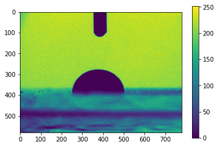
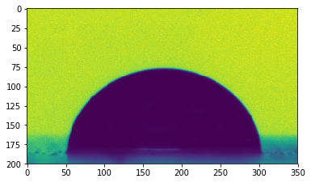
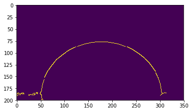
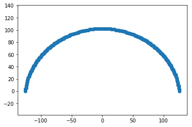

Image Analysis
You can get the python script detailled in this page here: script.py.
And an archive containing the script and the data here: archive.tar.gz, archive.zip.
Importing images
Importing images is made easy by the scipy package:
from scipy import misc
image = misc.imread('data/image.bmp')/usr/lib/python3.6/site-packages/ipykernel_launcher.py:2: DeprecationWarning: `imread` is deprecated!
`imread` is deprecated in SciPy 1.0.0, and will be removed in 1.2.0.
Use ``imageio.imread`` instead.
Images area stored as arrays of numbers. You can display them for verification using the matplotlib package:
import matplotlib.pyplot as plt
plt.figure()
plt.imshow(image)
plt.colorbar()
plt.show()
Cropping
As an edge detection at this point will certainly detect the syringe edges at the top, it may be a good idea to restrain the area of interest around the drop:
image = image[200:400, 200:550]
plt.figure()
plt.imshow(image)
plt.show()

Edge detection
OpenCV (Open Source Computer Vision Library) is a very efficient library that provide a python interface. We will use its edge detection functions to get the edge of our drop. More specifically, we will use the Canny edge detector.
This method necessitates to specify two threshold values. We will simply use the minimal and maximal pixel values here. Those thresholds can be tuned to enhance the edge detection depending on the situation.
import cv2
thres1 = image.min()
thres2 = image.max()
edges = cv2.Canny(image, thres1, thres2)
# Display the obtained edges
plt.figure()
plt.imshow(edges)
plt.show()
As we can see here, the edge detection succesfully detect the drop edges, but also some structures near the sample surfaces. Lets improve the threshold values to get rid of those unwated bits.
thres1 = image.min()*0.75
thres2 = image.max()*1.5
edges = cv2.Canny(image, thres1, thres2)
# Display the obtained edges
plt.figure()
plt.imshow(edges)
plt.show()We than need to remove the edges of the drop reflection on the sample. We can do this by removing all the edges present below the baseline.
edges[180:] = 0
# Display the obtained edges
plt.figure()
plt.imshow(edges)
plt.show()Fitting edges
Drop edge is for the moment stored as an image, if we want to access its position, we have to find the pixel position in space. numpy can help us do that by detecting where the pixel values are not zero.
import numpy as np
ys, xs = np.where(edges)
ys = np.asarray(-ys, dtype=float)
xs = np.asarray(xs, dtype=float)
# Plot the edges
plt.figure()
plt.plot(xs, ys, marker='o', ls='none')
plt.axis('equal')
plt.show()For convenience, we may want to center the drop edge on the referential
xs -= xs.mean()
ys -= ys.min()
# Plot the edges
plt.figure()
plt.plot(xs, ys, marker='o', ls='none')
plt.axis('equal')
plt.show()